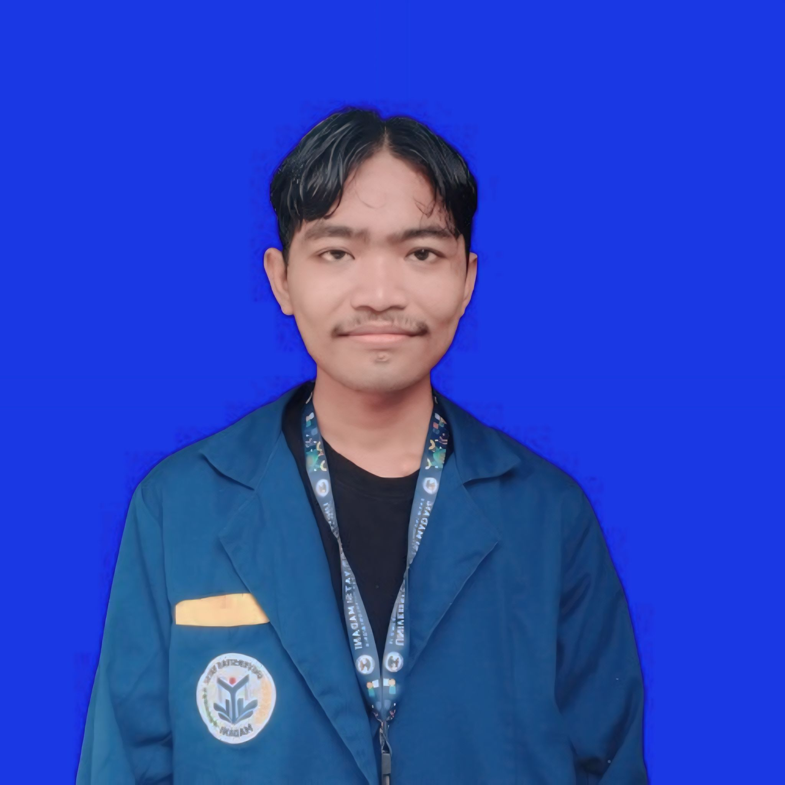
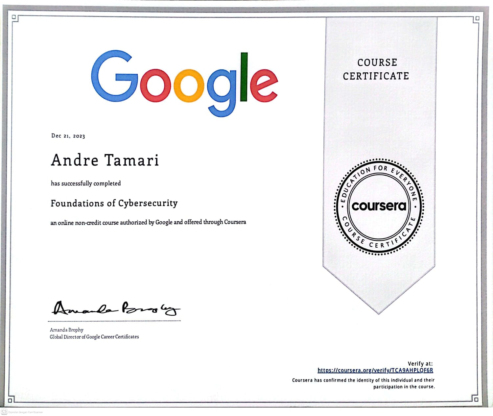
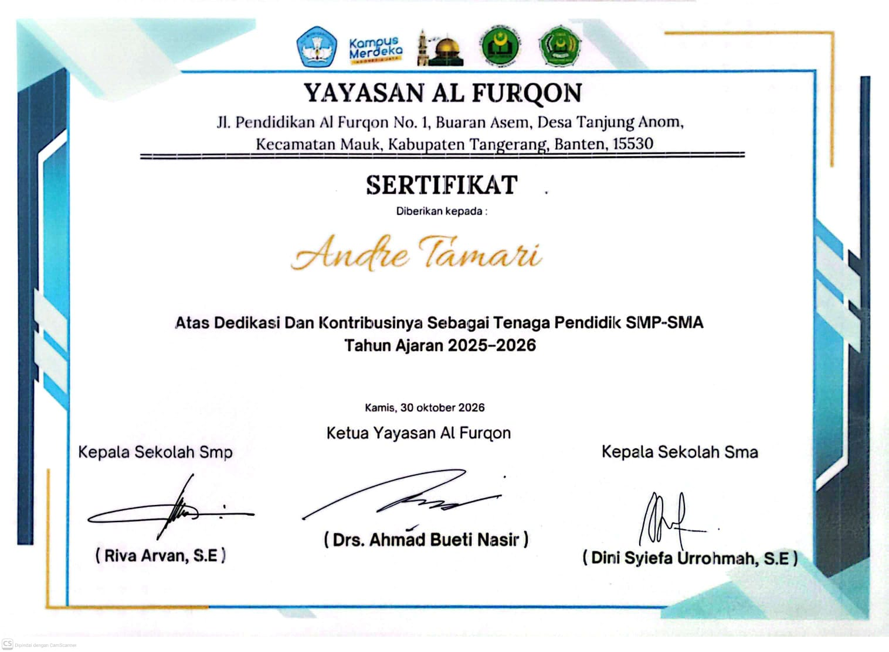
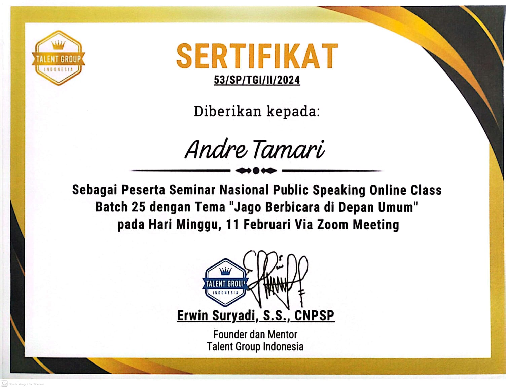
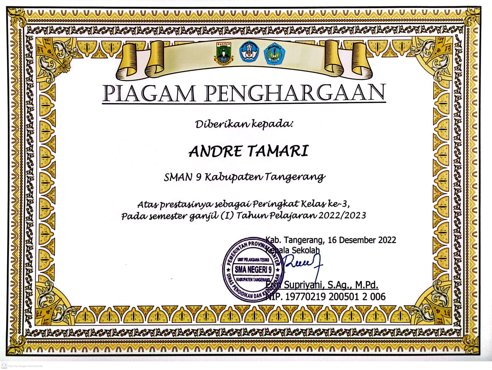
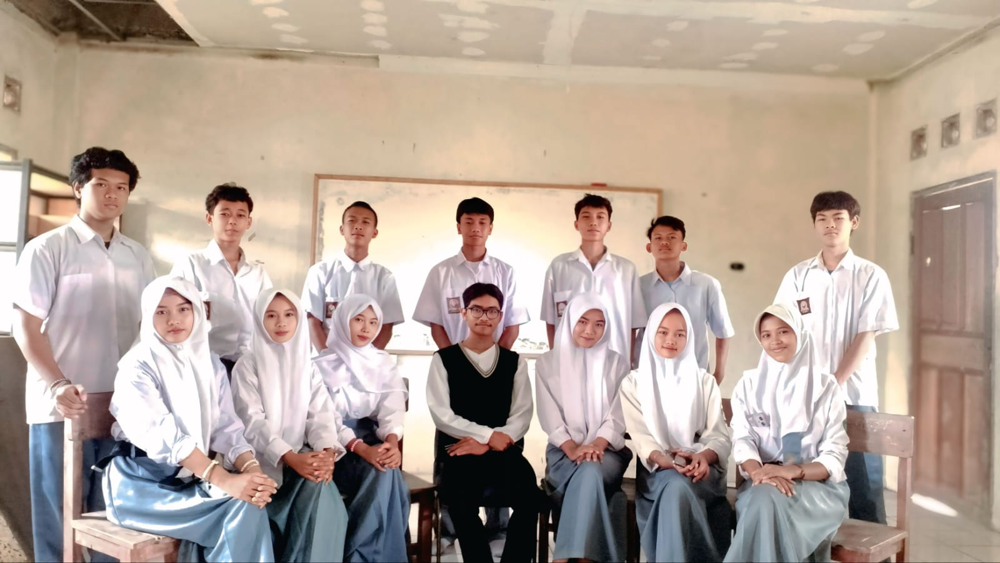
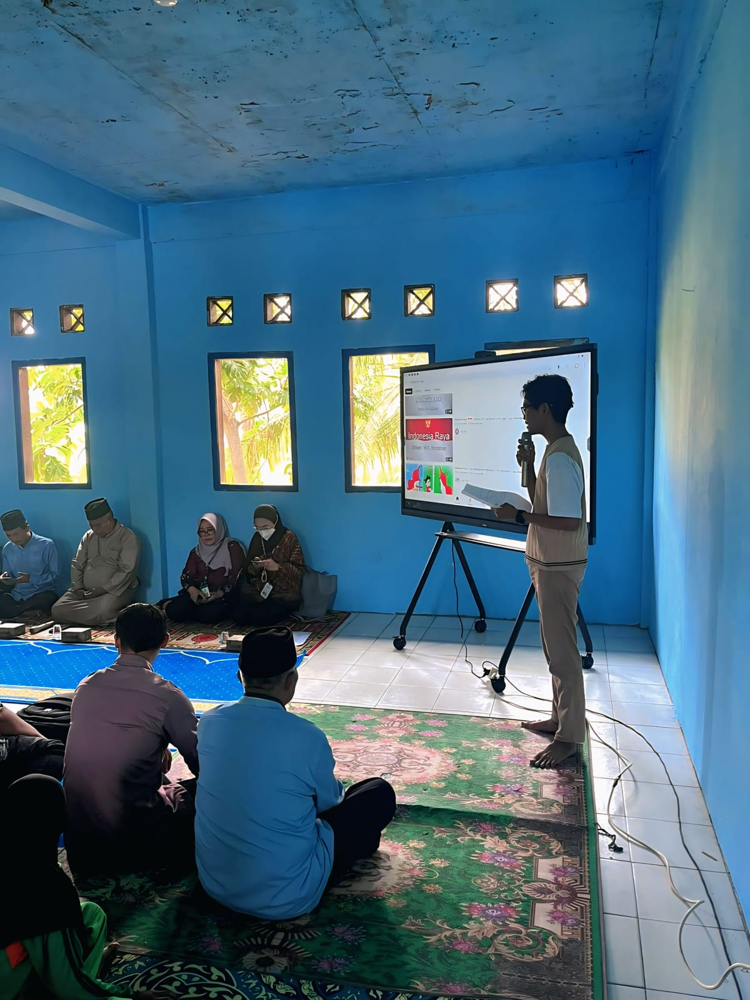
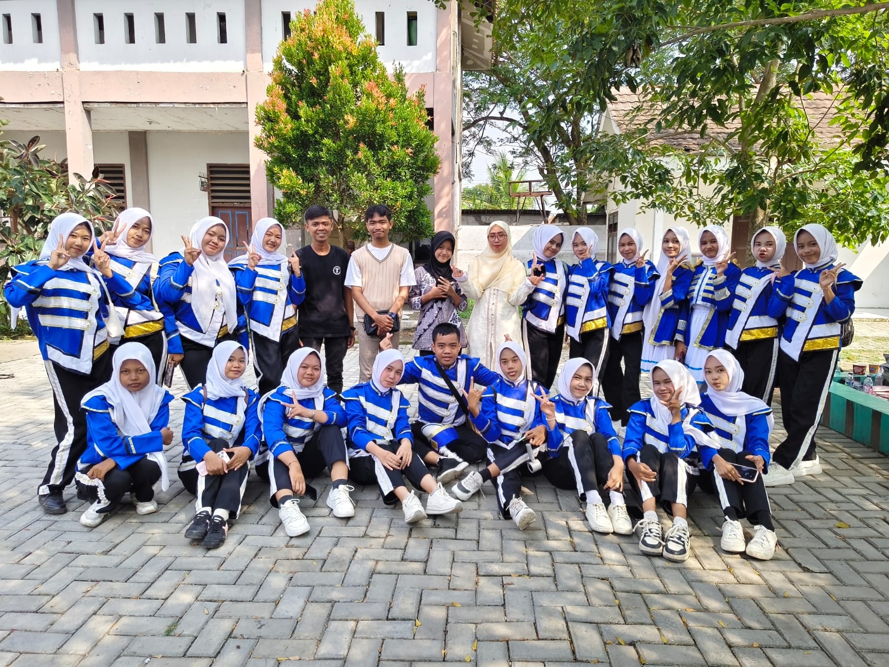

Andre Tamari
Kreator Konten | Fotografer | Videografer | Spesialis MS Office
Tentang Saya
Halo, perkenalkan! Nama saya Andre Tamari. Saya adalah seorang mahasiswa Ilmu Komputer yang memiliki minat besar di industri kreatif, khususnya dalam bidang fotografi dan videografi.
Perjalanan saya sebagai content creator dimulai sejak tahun 2018 di platform YouTube dengan fokus pada konten gaming. Saat ini, saya sedang hiatus dari YouTube karena keterbatasan perangkat dan memilih untuk aktif sebagai vlogger di TikTok sejak awal tahun 2026. Target saya adalah membangun audiens yang kuat dan mengumpulkan modal agar bisa meningkatkan kualitas perangkat demi melanjutkan kembali impian saya di YouTube Gaming.
Selain di dunia kreatif, saya juga menguasai kemampuan dasar Microsoft Office (seperti Excel dan Word) untuk kebutuhan administrasi profesional. Dengan kombinasi keahlian teknis dan kreativitas ini, saya siap berkontribusi aktif dan menyukseskan berbagai proyek di masa depan.
"Jika kamu tidak bisa menghasilkan uang disaat kamu tidur, kamu harus bekerja sampai mati" - Warren Buffett
⚡ Keahlian Saya
Konten Kreator
Berpengalaman sejak 2018 dalam memproduksi konten video digital yang menarik, adaptif terhadap tren platform (YouTube & TikTok), serta mampu membangun interaksi audiens (engagement).
Fotografi & Videografi
Menguasai teknik pengambilan gambar, komposisi visual, dan pencahayaan untuk menghasilkan aset dokumentasi serta materi promosi yang estetis dan bercerita.
Analisis Data (MS Excel)
Mahir dalam mengolah data kuantitatif, menerapkan rumus/formula kompleks, serta menyajikan visualisasi data (dashboard) untuk mendukung pengambilan keputusan.
Manajemen Dokumen (MS Word)
Ahli dalam penyusunan dokumen formal, otomatisasi surat-menyurat (mail merge), serta penerapan format standar profesional skala besar.
Seni Musik
Kemampuan memainkan instrumen musik dan mengasah kreativitas, kepekaan estetika, sekaligus menjadi sarana manajemen stres yang efektif.
Kreativitas Kuliner
Memiliki ketertarikan dan keterampilan dalam mengeksplorasi berbagai resep masakan, melatih fokus, detail, dan manajemen waktu di dapur.
📜 Sertifikat

Sertifikat akan tampil di sini
'">Sertifikasi Profesional: Foundations of Cybersecurity (Google/Coursera)
Sertifikasi resmi yang memvalidasi pemahaman mendalam tentang keamanan digital, analisis risiko, jaringan, serta fundamental keamanan informasi yang relevan dengan latar belakang studi Ilmu Komputer saya.
Lihat Sertifikat →
Sertifikat akan tampil di sini
'">Sertifikat Tenaga Pengajar (Yayasan Al-Furqon)
Penghargaan atas dedikasi dan kontribusi nyata sebagai tenaga pengajar/Guru Bahasa Inggris tingkat SMP/SMA. Pengalaman ini mengasah kemampuan komunikasi, manajemen kelas, kepemimpinan, dan tanggung jawab emosional saya.
Lihat Sertifikat →
Sertifikat akan tampil di sini
'">Sertifikat Seminar Nasional Public Speaking
Bukti partisipasi aktif dalam pelatihan komunikasi publik berskala nasional untuk mendalami teknik Jago Berbicara di Depan Umum, yang sangat mendukung peran saya sebagai kreator konten dan pembicara.
Lihat Sertifikat →
Sertifikat akan tampil di sini
'">Penghargaan Prestasi Akademik (Peringkat 3 Kelas XII SMAN 9 Kabupaten Tangerang)
Apresiasi atas pencapaian akademik dengan meraih peringkat 3 besar di masa akhir sekolah menengah, mencerminkan konsistensi, kedisiplinan, dan kerja keras dalam belajar.
Lihat Sertifikat →🎬 Pengalaman Karya

Foto akan tampil
'">Tenaga Pendidik / Guru Bahasa Inggris
Berpengalaman dalam merancang materi pembelajaran, mengelola kelas, serta mengajar siswa tingkat SMP/SMA. Pengalaman ini mengasah kemampuan komunikasi interpersonal dan kepemimpinan saya.
Lihat Foto →
Foto akan tampil
'">Narasumber & Moderator Acara Peresmian Makan Bergizi Gratis
Dipercaya untuk memandu dan menjadi narasumber dalam acara pengesahan program Makan Bergizi Gratis (MBG), mengaplikasikan keahlian public speaking dan manajemen audiens dalam forum formal.
Lihat Foto →
Foto akan tampil
'">Pelatih & Instruktur Marching Band
Memimpin, melatih, dan menyusun strategi performa tim ekstrakurikuler marching band. Fokus pada pengembangan kedisiplinan, kerja sama tim, serta penyelarasan estetika musik dan gerakan.
Lihat Foto →